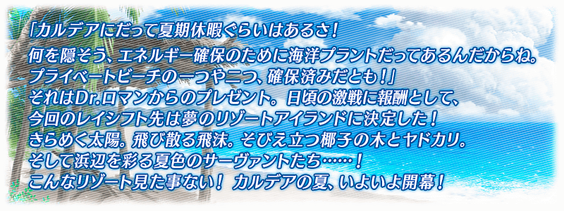
◆活動舉辦期間◆
2017年7月12日(三) 17:0020:00～7月29日(六) 22:59
◆活動概要◆
舉辦期間限定活動「復刻:夏日! 大海! 開拓! FGO 2016 Summer 迦勒底夏日回憶 ～療癒白沙灘～ 輕量版」！
收集活動道具實行開拓關卡，開拓無人島吧。
推進選擇式的開拓關卡來製作專屬自己的島嶼。
本活動為二部構成。
通過第一部主線關卡的話「★4(SR)斯卡哈(Assassin)」會以期間限定加入。
第二部預定自7月20日(四)開始。
要參加第二部條件為通過第一部的主線關卡。
第二部是新地圖，新的活動道具登場！！
通過第二部主線關卡的話「★4(SR)斯卡哈〔Assassin〕」正式加入。
將第一部、第二部一起通過，將斯卡哈〔Assassin〕的正式加入做為目標吧！
另外，也追加只限通過「終局特異點」及「復刻:夏日! 大海! 開拓! FGO 2016 Summer 迦勒底夏日回憶 ～療癒白沙灘～ 輕量版」全部主線關卡的Master才能參加的挑戰關卡。
※本活動為復刻於2016年舉辦的「夏日! 大海! 開拓! FGO 2016 Summer 迦勒底夏日回憶 ～療癒白沙灘～ 」，調整一部份活動専用道具交換的交換數等變得容易遊玩的「復刻輕量版活動」。
※活動限定Servant「★4(SR)斯卡哈(Assassin)」及活動限定概念禮裝與2016年舉辦時同様可以獲得。
◆活動参加條件◆
只限通過「特異點F 炎上汙染都市 冬木」的Master才能参加
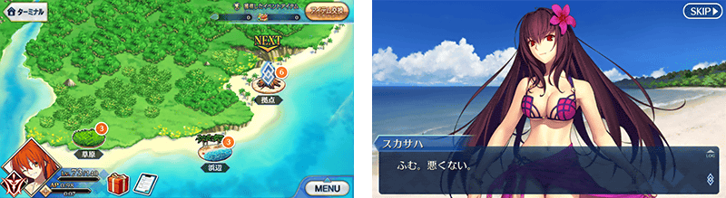
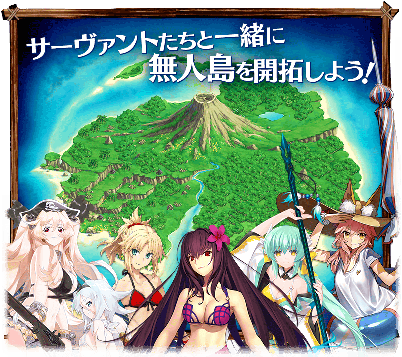
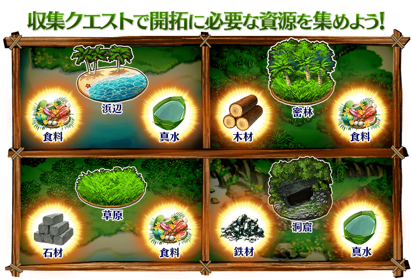
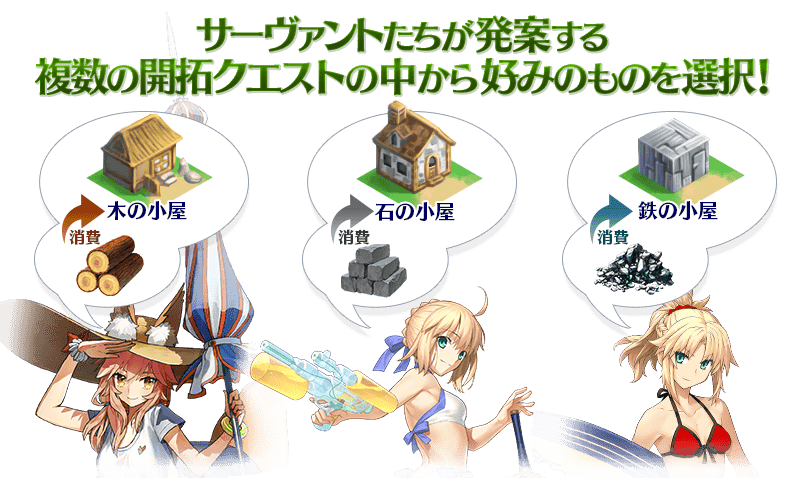
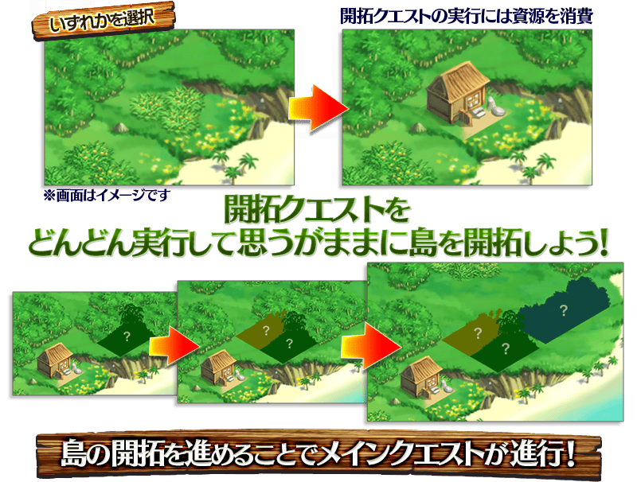
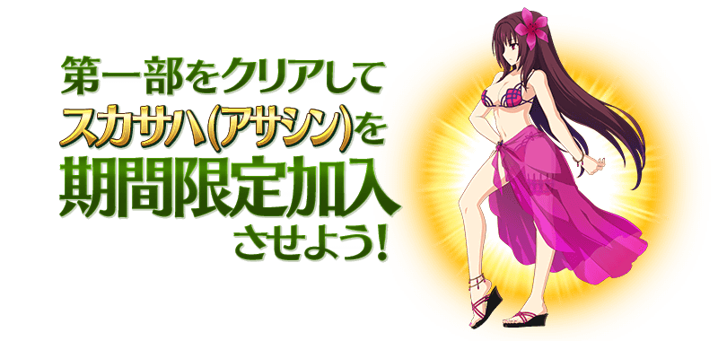
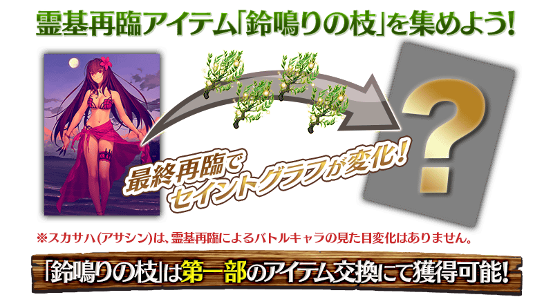
推進主線關卡會發生開拓關卡。
開拓關卡會同時開放３種類，只能選擇其中１種實行。
在開拓關卡的實行會消耗資源(活動道具)。
活動道具可以靠挑戰收集關卡獲得。
※實行１種開拓關卡的話，沒選到的剩餘２種開拓關卡會消失。
實行在通過第一部後出現的開拓重置關卡的話，可以重新選擇沒選到的開拓關卡。
通過一定數開拓關卡的話會開放主線關卡。
藉著主線關卡的進行發生新的開拓關卡及收集關卡。
反覆地「收集」「開拓」，推進主線關卡吧！
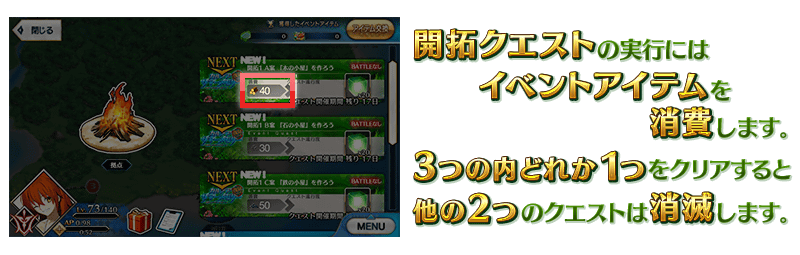
◆耀眼・夏日關卡◆
能與活動限定Servant們體驗特別故事的關卡。
透過主線關卡的進行來開放。。
另外，可以獲得呼符做為通過報酬。
| 關卡名 | 關卡通過報酬 |
|---|---|
| 耀眼・夏日 ～與玉藻出遊～ |
呼符×1 |
| 耀眼・夏日 ～與莫德雷德同行～ |
呼符×1 |
| 耀眼・夏日 ～與清姫約會～ |
呼符×1 |
| 耀眼・夏日 ～與安妮＆瑪莉探險～ |
呼符×1 |
◆發現漂流物！關卡◆
消耗AP挑戰關卡的話，可以獲得更多活動道具的關卡。
推進一定以上主線關卡後開放，依照經過天數追加。
開放的關卡在活動期間中，無論何時都能挑戰。
※通過關卡後消失。
◆開拓重置關卡◆
通過第一部主線關卡的話，會出現開拓重置關卡。
實行開拓重置關卡能重新開始島嶼的開拓。
藉著利用開拓重置關卡，遊玩錯過的故事，獲得之前沒辦法獲得的關卡通過報酬，再次享受島嶼的開拓。
※進行重置後開拓消費的活動道具不會歸還。
◆超值攻略方法・其1◆
依照Servant的職階賦予活動道具的獲得數提升的加成！
例如，在可入手石材關卡的編成加入Saber職階Servant的話會提升石材的獲得數。
關於各職階獲得數提升的活動道具，可在關卡開始時的編成畫面和Servant詳細確認。
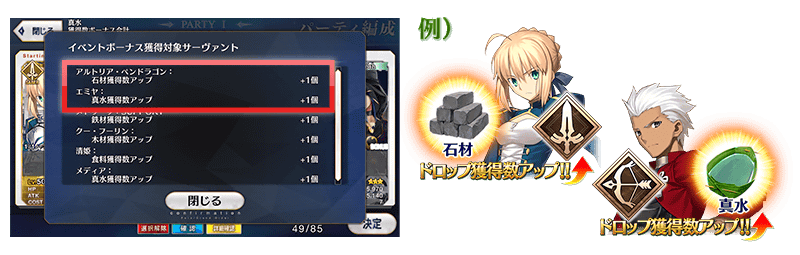
| 活動道具 | 職階 |
|---|---|
鐵材 |
Rider |
| MoonCancer | |
石材 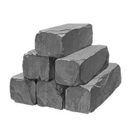 |
Saber |
| Assassin | |
| Alterego | |
木材 |
Lancer |
| Avenger | |
真水 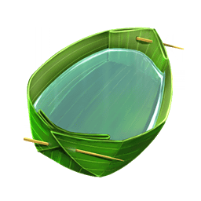 |
Archer |
| Caster | |
| Shielder | |
食料 |
Berserker |
| Ruler |
◆超值攻略方法・其2◆
裝備能靠活動道具交換入手的活動限定概念禮裝「★5(SSR)サマータイム・ミストレス」的話，真水與食料的掉落獲得數會提升。
◆超值攻略方法・其3◆
裝備期間限定概念禮裝的話，活動道具「鐵材」「石材」「木材」各自的獲得數會提升。
※期間限定概念禮裝也會追加在第二部開始時第二部専用的活動道具掉落獲得數增加效果。
※請注意在各關卡的道具掉落率並非100%。
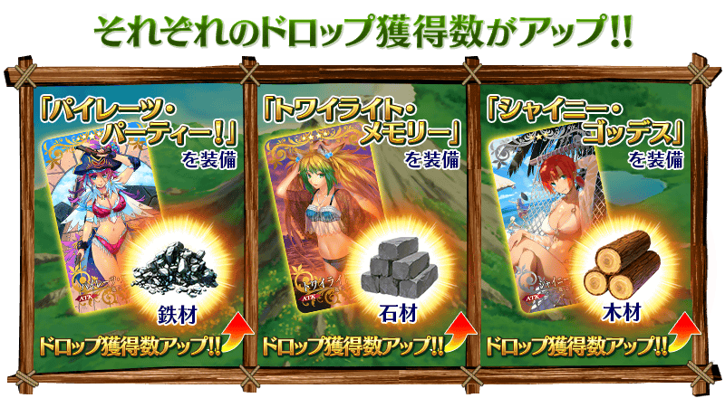
◆超值攻略方法・其4◆
於2016年舉辦的「夏日! 大海! 開拓! FGO 2016 Summer Pick Up召喚2」，已入手以下的期間限定概念禮裝情況，裝備這些概念禮裝的話，活動道具「鐵材」「石材」「木材」的掉落獲得數也會提升！
※請注意在各關卡的道具掉落率並非100%。
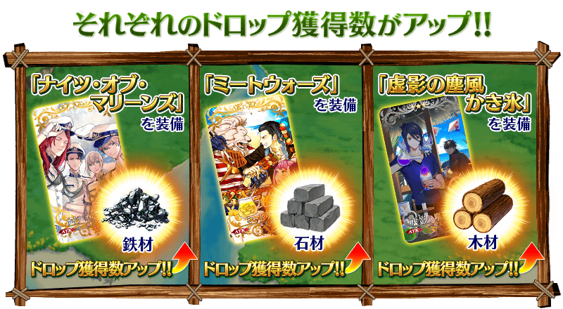
| 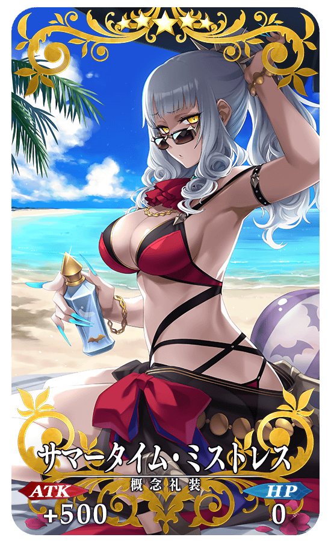 |
★★★★★SSR |
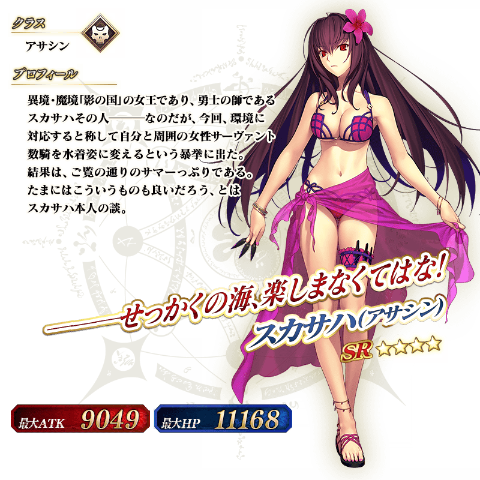
※斯卡哈〔Assassin〕在第一部通過後期間限定加入，第二部通過後正式加入。
靈基再臨需要活動限定的専用靈基再臨道具「鈴鳴りの枝」。
寶具等級提升的詳情會在第二部相關的公告記載。
◆交換方法◆
交換期間:2017年7月12日(三) 17:0020:00～8月2日(三) 11:59
※交換期間結束後｢鐵材｣｢石材｣｢木材｣｢食料｣｢真水｣會消失。
從達文西工房内的「活動道具交換」，能用活動道具來交換以下的道具。
◆能用鐵材交換的道具◆
 |
【活動限定概念禮裝】 【活動限定靈基再臨素材】 【技能強化素材、靈基再臨素材】 【靈基再臨素材】 【其他道具】 |
◆能用石材交換的道具◆
|
【活動限定概念禮裝】 【活動限定靈基再臨素材】 【技能強化素材、靈基再臨素材】 【靈基再臨素材】 【其他道具】 |
◆能用木材交換的道具◆
|
【活動限定概念禮裝】 【活動限定靈基再臨素材】 【技能強化素材、靈基再臨素材】 【靈基再臨素材】 【其他道具】 |
◆能用食料交換的道具◆
|
【活動限定概念禮裝】 【技能強化素材、靈基再臨素材】 【其他道具】 |
◆能用真水交換的道具◆
| 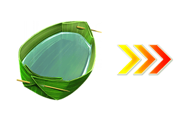 |
【活動限定靈基再臨素材】 【技能強化素材、靈基再臨素材】 【其他道具】 |
為了記念｢復刻:夏日! 大海! 開拓! FGO 2016 Summer 迦勒底夏日回憶 ～療癒白沙灘～ 輕量版｣舉辦，魔術禮裝「ブリリアントサマー」以期間限定登場！
推進第一部主線關卡的話，魔術禮裝獲得關卡在第一部地圖內以期間限定出現！
裝備新獲得的魔術禮裝的話，可以使用新的Master技能。
※請注意於2016年舉辦時獲得過魔術禮裝「ブリリアントサマー」的情況，在輕量版復刻活動不會發生獲得魔術禮裝的的關卡。
◆舉辦期間◆
2017年7月12日(三) 17:0020:00～7月29日(六) 22:59
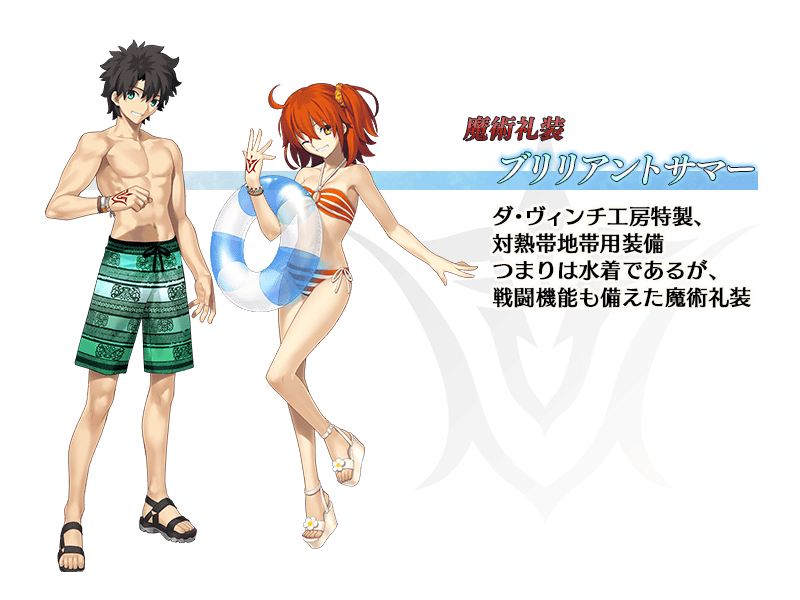
以通過「終局特異點」及「復刻:夏日! 大海! 開拓! FGO 2016 Summer 迦勒底夏日回憶 ～療癒白沙灘～ 輕量版」的主線關卡的Master為對象開放高難易度關卡「挑戰關卡」。
通過挑戰關卡時，可獲得豪華報酬。
挑戰關卡就算在通過後也不會消失，能無數次挑戦，可以變更Servant和概念禮裝的組合後再次挑戰。
※關卡通過報酬、戰利品、MasterEXP、魔術禮裝EXP、絆點數只限在初次通過時獲得。
◆挑戰關卡参加條件◆
只限通過「終局特異點」及「復刻:夏日! 大海! 開拓! FGO 2016 Summer 迦勒底夏日回憶 ～療癒白沙灘～ 輕量版」全部主線關卡的Master才能参加
◆挑戰關卡初次通過報酬◆
英靈結晶・流星之芙芙ALL★4(HP) 1枚
在「復刻:夏日! 大海! 開拓! FGO 2016 Summer 輕量版」首次入手本活動的期間限定Servant(含斯卡哈(Assassin))的情況，Servant的活動關聯語音由於為與活動相關內容，會在本活動結束後才追加到語音清單。
另外，活動結束後商店語音以外的活動關聯語音追加到語音清單必須通過「復刻:夏日! 大海! 開拓! FGO 2016 Summer 迦勒底夏日回憶 ～療癒白沙灘～ 輕量版」的主線關卡「ライフ・イズ・ビューティフル」。
※還有，於2016年的「夏だ! 海だ! 開拓だ! FGO 2016 Summer」舉辦時就已入手的期間限定Servant(含斯卡哈(Assassin))不在上述的內容。
在強化畫面追加新功能「靈衣開放」。
「靈衣開放」為獲得可藉關卡通過等獲得的開放權後，滿足特定的條件的話，就能變更對象Servant的外觀。

※(7/10修正)
想開放瑪琇・基利艾拉特的靈衣「常夏的泳裝」的話，除了靈衣開放權外必須再加上，以下的開放條件和素材。
◆開放條件◆
・最終再臨
・Lv.MAX
◆必要素材◆
・追憶の貝殻
・八連双晶
・大騎士勲章
・鳳凰の羽根
・QP
※「靈衣開放」後自動切換戰鬥角色和圖示。若想回到「靈衣開放」前的狀態和變成其他再臨階段的情況，可自Servant詳細畫面變更。
※「靈衣開放」只變更Servant的外觀，職階和能力等並無變化。
※在「復刻:夏日! 大海! 開拓! FGO 2016 Summer 輕量版」靈衣追加的Servant只有瑪琇・基利艾拉特。關於對象Servant及靈衣會在今後的活動等依序追加。
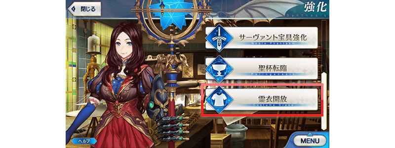
「靈衣開放」可自強化畫面選擇。
在遊戲內顯示的職階相關圖追加EXTRA職階。

在Servant強化畫面的篩選器設定追加以下的項目。
1.可由Servant的強化値設定顯示/不顯示。
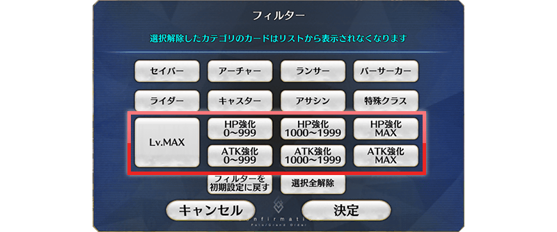
【Lv.MAX】
已Lv.最大強化的Servant的顯示/不顯示
【HP強化 0～999】
HP強化値0～999的Servant的顯示/不顯示
【HP強化 1000～1999】
HP強化値1000～1999的Servant的顯示/不顯示
【HP強化MAX】
已HP最大(2000)強化的Servant的顯示/不顯示
【ATK強化 0～999】
ATK強化値0～999的Servant的顯示/不顯示
【ATK強化 1000～1999】
ATK強化値1000～1999的Servant的顯示/不顯示
【ATK強化MAX】
已ATK最大(2000)強化的Servant的顯示/不顯示
2.在強化素材選擇時的篩選器追加「只顯示與強化對象同一職階」與「不顯示選擇對象外」。
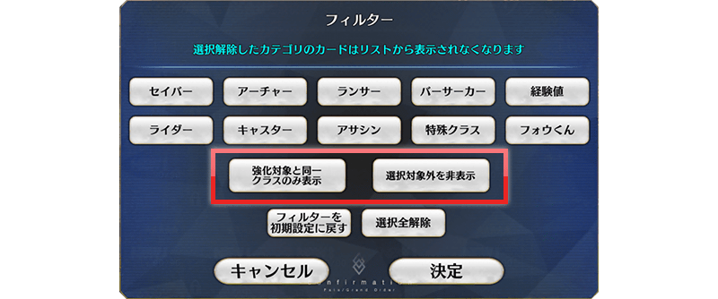
【只顯示與強化對象同一職階】
只顯示與強化對象Servant同一職階的素材
【不顯示選擇對象外】
不顯示無法合成的素材
※在上鎖、最愛、隊伍、支援設定中的Servant也包含在不顯示。
在各畫面追加智慧排序功能。
智慧排序功能ON的話，可切換能強化的對象會移動到前排，無法選擇的對象移動到最尾端等。
【智慧排序對象畫面】
・Servant強化(強化對象選擇/強化素材選擇)
・Servant技能強化
・概念禮裝強化＆進化(強化對象選擇/強化素材選擇)
・靈基再臨
・Servant寶具強化(強化對象選擇/強化素材選擇)
・聖杯轉臨
・靈基變還(Servant/概念禮裝)
・靈基保管室(Servant/概念禮裝)
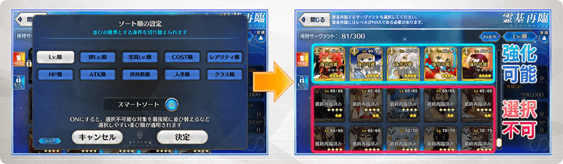
※隨著智能排序功能的追加，各畫面中點擊來切換的排序顯示內容變為以對話框顯示。
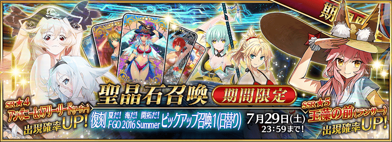
◆「復刻 夏日! 大海! 開拓! FGO 2016 Summer Pick Up召喚1(每日交替)」期間◆
期間:2017年7月12日(三) 17:0020:00～7月29日(六) 22:59
以期間限定舉辦「復刻 夏日! 大海! 開拓! FGO 2016 Summer Pick Up召喚1(每日交替)」！
變更於2016年舉辦的「夏日! 大海! 開拓! FGO 2016 Summer Pick Up召喚1」一部份内容進行復刻。
說到夏日活動，身穿適合夏日服裝的Servant「★5(SSR)玉藻前(Lancer)」「★4(SR)安妮・伯妮＆瑪莉・瑞德(Archer)」「★4(SR)清姬(Lancer)」「★4(SR)莫德雷德(Rider)」以期間限定登場！
「★5(SSR)玉藻前(Lancer)」常駐Pick Up！
另外「★4(SR)安妮・伯妮＆瑪莉・瑞德(Archer)」「★4(SR)清姬(Lancer)」「★4(SR)莫德雷德(Rider)」以每日交替Pick Up！
詳情請在聖晶石召喚畫面左下的召喚詳細確認。
※玉藻前(Lancer)、安妮・伯妮＆瑪莉・瑞德(Archer)、清姬(Lancer)、莫德雷德(Rider)在Pick Up召喚期間結束後，不會追加到故事召喚。
裝備期間限定概念禮裝「★5(SSR)パイレーツ・パーティー！」「★4(SR)トワイライト・メモリー」「★3(R)シャイニー・ゴッデス」的話，活動道具的掉落獲得數會提升。
※「★3(R)シャイニー・ゴッデス」在Pick Up期間中，也能在友情點數召喚獲得。
※能在「復刻 夏日! 大海! 開拓! FGO 2016 Summer Pick Up召喚1」獲得的期間限定概念禮裝預定於第二部開始後，賦予對應第二部活動道具的效果。
詳情會在第二部相關的公告記載。
Pick Up期間中，期間限定Servant、期間限定概念禮裝的出現機率提升！
10次召喚中確定1張★4(SR)以上和確定1位★3(R)以上的Servant！
※確定★4(SR)以上包含Servant和概念禮裝。
※所謂「出現機率提升」意指比同稀有度的Servant及概念禮裝出現機率更高的設定。
| 每日交替Pick Up期間 | 每日交替Pick Up內容 |
|---|---|
| 7月12日(三) |
玉藻前(Lancer)、安妮・伯妮＆瑪莉・瑞德(Archer)、清姬(Lancer)、莫德雷德(Rider) |
| 7月18日(二) 23:00～7月20日(四) 22:59 | 玉藻前(Lancer)、安妮・伯妮＆瑪莉・瑞德(Archer) |
| 7月20日(四) 23:00～7月22日(六) 22:59 | 玉藻前(Lancer)、清姬(Lancer) |
| 7月22日(六) 23:00～7月24日(一) 22:59 | 玉藻前(Lancer)、莫德雷德(Rider) |
| 7月24日(一) 23:00～7月29日(六) 22:59 | 玉藻前(Lancer)、安妮・伯妮＆瑪莉・瑞德(Archer)、清姬(Lancer)、莫德雷德(Rider) |
※請注意會以每日交替變更Pick Up的Servant。

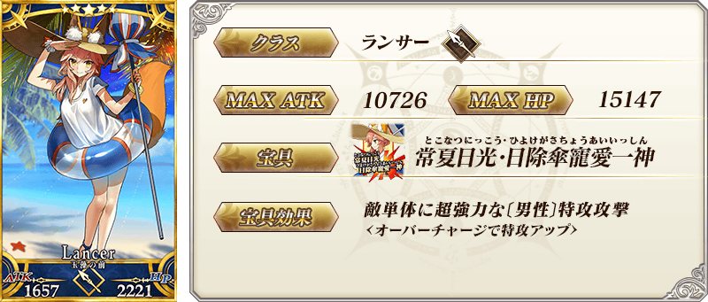
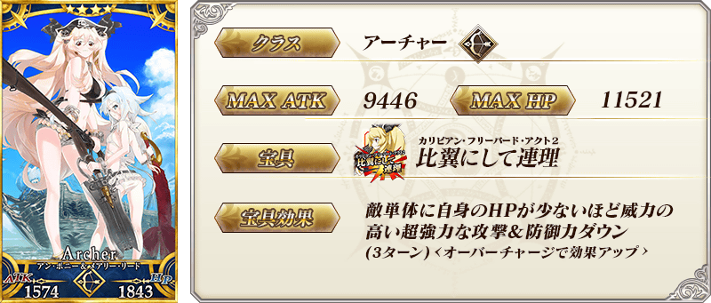
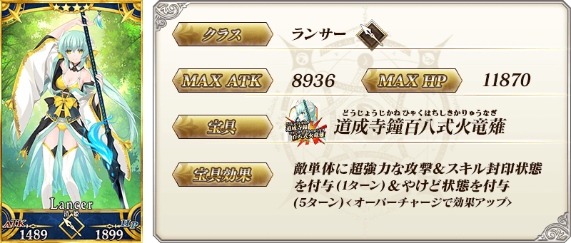
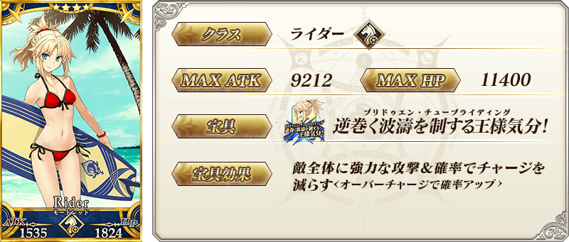
| 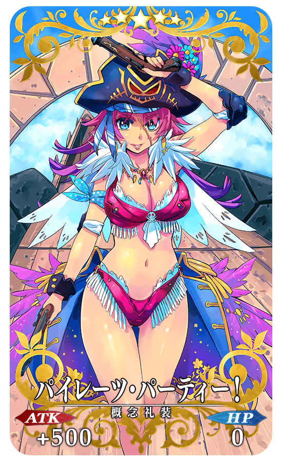 |
★★★★★SSR |

| 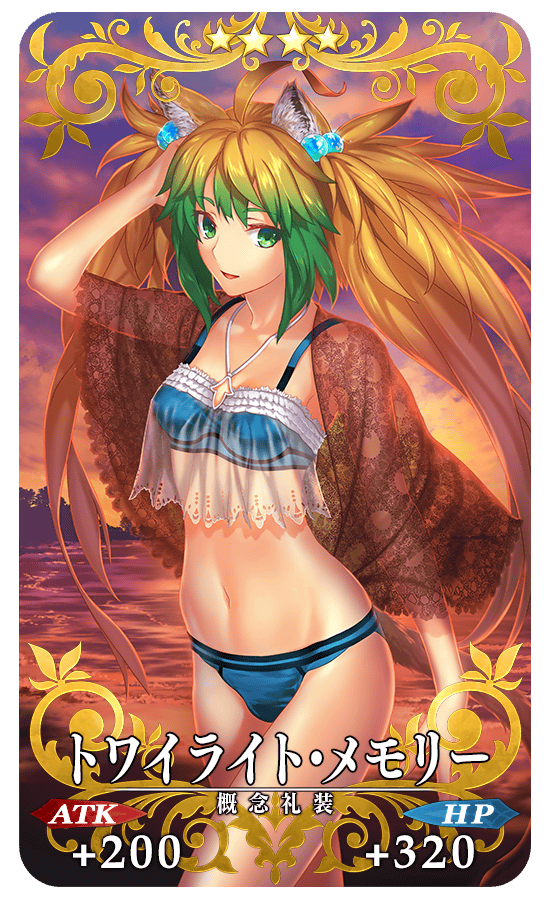 |
★★★★SR |
| 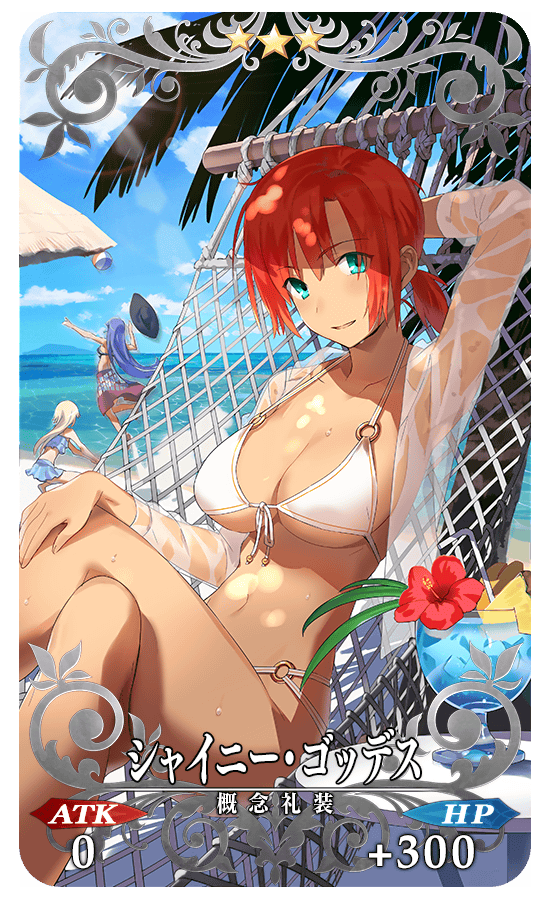 |
★★★R |
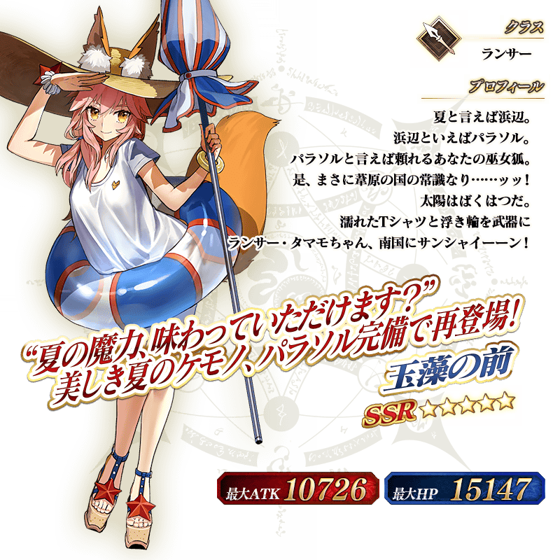
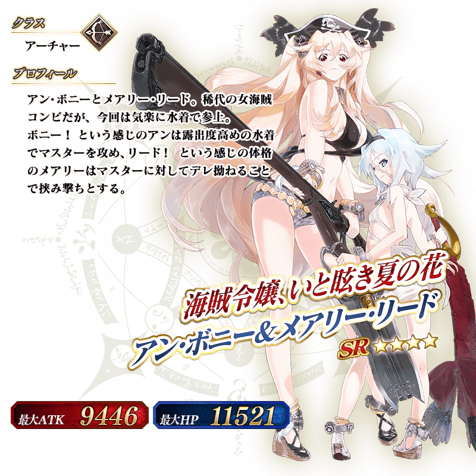
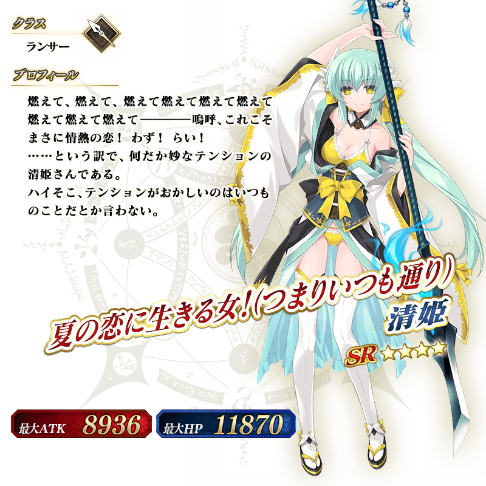
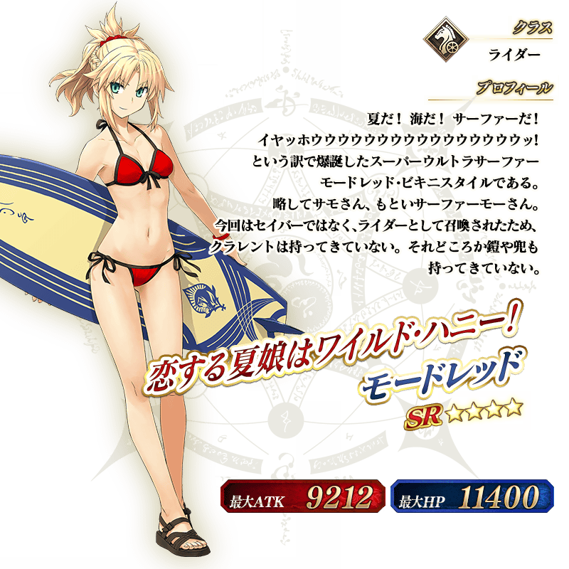